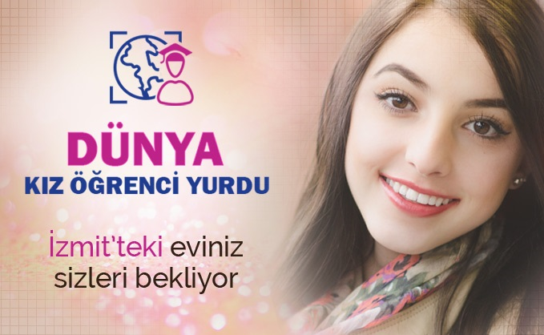
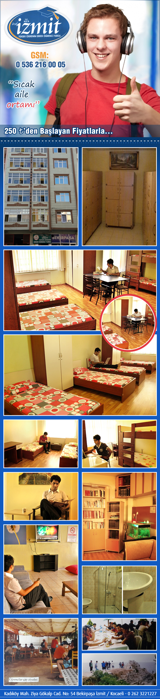

|
Dünya Kız Yurdu

İzmit'teki eviniz sizi bekliyor
İmkanlarımız
• Güler yüzlü hizmet
• Günlük oda temizliği
• Konforlu, geniş, aydınlık, dinlenme ve TV salonu
• 1, 2, 4 kişilik, aydınlık, güneş alan, zemini parke olan ve halı bulunan odalarda, kişiye özel çalışma masası ve elbise dolapları
• Hijyen koşullarda usta aşçıların elinden bol çeşitli sabah kahvaltısı ve akşam yemeği
• Öğrencilerin kullanımına açık mutfak ve buzdolapları
• Etüt salonu
• Revir
• LCD televizyonlu dinlenme salonu
• Odalarda sabit telefon
• Tüm binamızda 24 saat internet (sınırsız kablosuz ağ bağlantısı)
• 24 saat sıcak su
• Binanın dört cephesinde kameralı güvenlik
• 4 saat kapalı devre kamera sistemi ile güvenli giriş çıkış kontrolü
Gözde Kız Yurdu
Web Sitemiz: www.gozdeyurtlari.net
Hakkımızda
Kocaeli İzmit Kaymakamlığı'nın ve İlçe Emniyet Müdürlüğü'nün tam karşısında bulunan kız öğrenci apartımız, Kocaeli Üniversitesi Umuttepe Kampüsü'ne giden toplu taşıma araçlarına 3 dk yürüme mesafesinde ve diğer bütün kampüslere (Arslanbey, Kullar, Derbent, Köseköy, Uzunçiftlik, Hereke, Gölcük, Karamürsel) tek vasıta ile ulaşım kolaylığı sunmaktadır.
İmkânlarımız
» 2, 3, 4 ve 5 kişilik sandıklı - baza yataklı odalar
» Her dairede kız öğrencilerin kullanımına açık öğrenci mutfağı ve her mutfakta TV izleme imkanı
» Her odada mini buzdolabı
» Tüm oda zemini laminant parke kaplama
» Kat kalorifer kombi sistemi
» 24 saat sıcak su
» Öğrenciler için kilitli ayakkabı ve terlik dolabı
» Etüt odası ve revir
» Ücretsiz çamaşır yıkama kurutma ve ütü imkânı
» Günlük oda, WC ve banyo temizlik hizmetleri
» Uydu bağlantılı TV, HD yayın
» Her kat için ayrı kablosuz internet imkânı
» Günün yorgunluğunu ve stresini atmak için dinlenme odalarımız
» Güler yüzlü profesyonel bir yönetim ve idari anlayış
» Uygun ücret ve uygun ödeme koşulları
» Diğer tüm kampüslere tek vasıta ile sorunsuz ulaşım kolaylığı bulunmaktadır.
Aydoğan Erkek Yurdu
Aydoğan grubu olarak bu güne kadar yaşam alanları kurarken dikkate aldığımız, temeline de insanı koyduğumuz yapı felsefemizi, değerlerimizi ve bilgi birikimimizi İzmit'e taşıdık. Aydoğan yurdunun konumlandırılmasında öğrencileri ve çalışanları düşünerek bu proje için Kocaeli’nin en merkezi ulaşımı kolay yerini seçtik. Hayatınıza değer katan farklı bir yaşam tarzı sunuyoruz. Doğanın sesi ve rengiyle baş başa, modern mimarisi, sağlam yapı teknolojisi ve çağdaş kent insanının ihtiyaç duyacağı pek çok sosyal aktiviteyi bir arada sunan Aydoğan günümüzün en doğru projesi. Aydoğan yeniliği, farklılığı, güveni, konforu, rahatlığı, kaliteyi kısacası inovasyonu bir arada sunan iç mekan tasarımı ile İzmit’te farklı bir yaşam tarzı getiriyor.
İmkanlarımız
» Yurdumuz mevki olarak Umuttepe kampüsüne sadece 5 dakika uzaklıktadır. Şehir merkezine ise 10 dakika uzaklıktadır.
» Yurdumuz ana cadde üzerinde bulunup Umuttepe kampüsü ve şehir merkezine her dakika geçen minibüsler ile ulaşım oldukça kolaydır
» 2012 yılında yapılmış olan binamız deprem güvenlik belgesine sahip olup dış cephe izolasyonu mevcuttur.
» Yurdumuz konum itibariyle son derece güvenli bir noktada olup, yan tarafımızda emniyet müdürlüğü mevcuttur.
» Binamızda 12 tane kamera mevcut olup 24 saat kayıt altındadır.
» 2,3 ve 4 kişilik geniş ve havadar odalar
» Tüm oda zemini laminant parke kaplama
» Öğrenciler için ayakkabı ve terlik dolapları, ücretsiz çamaşır kurutma ütü hizmetleri
» Günlük WC banyo oda temizlik hizmetleri
» Digitürk, D-Smart ile maç keyfi
» Her kat için ayrı kablosuz internet imkanı
» 24 saat kesintisiz internet ve sıcak su hizmetleri
» Odalar arasında ses izolasyonu
» Odalarımız kişi başına metrekare olarak milli eğitimin vermiş olduğu standartların üzerindedir
» Elektrik ve su kesintilerine karşı jeneratör ve su deposu mevcuttur
» Bütün odalarımızda mini buzdolabı
» Sabah kahvaltımız fiyatlarımız dahilindedir
» Uygun ücret ve uygun ödeme koşulları
» Güler yüzlü profesyonel bir yönetim ve idari anlayış
» Kolay Ödeme - Kredi Kartına Taksit
İzmit Erkek Yurdu

İzmit Erkek Öğrenci Yurdu
Hakkımızda:
Kahvaltı ve yemek isteğe bağlıdır!
İzmit Erkek Öğrenci Yurdu, Kocaeli İzmit'te öğrenim gören erkek öğrencilere hizmet vermekte, eğitim dönemleri boyunca sunduğu tüm yurt imkânlarıyla erkek öğrencilerin kendilerini evlerinde hissetmelerini sağlamaktadır.
Yurt misyonu; eğitimde yüksek standartları hedefleyen, ahlâklı ve erdemli gençlerin temel ihtiyaç ve hakları olan nitelikli ve hijyenik yaşam koşullarını sağlayarak öğrencilere kaliteli barınma hizmeti sunmaktır.
Yurt vizyonu; sürekli gelişen kaliteli hizmet anlayışı ve özverili çalışan personelin katılımıyla barınma hizmetinde farklı bir model olmaktır.
İzmit Erkek Öğrenci Yurdu; öğrencilerin ihtiyaç ve beklentilerini göz önünde bulundurarak, sürekli gözden geçirilen kalite hedefleri doğrultusunda barınma hizmeti gerçekleştirmek ve geliştirmek için çalışmakta, doğru işe doğru insan atayan, çalışanlarıyla açık iletişimde olan ve her düzeyde eğitime önem veren yönetim ilkesini benimsemektedir.
Yurt İmkânları:
İzmit Erkek Öğrenci Yurdu, Kocaeli İzmit'te öğrenim gören erkek öğrencilere birçok yurt imkânını sunmakta, İzmit'te öğrenim gören erkek öğrencilerin seçim yapmalarını kolaylaştırmaktadır.
» Depreme Dayanıklı Bina
» Geniş Odalar
» Odalarda Dolap
» Bazalı Yataklar
» Ahşap Parke Döşeme
» Etüt Odası
» 7/24 Sınırsız İnternet
» Dinlenme Salonu
» TV Salonu
» Üniversiteye Kolay Ulaşım
» Her odada Buzdolabı
» Öğrencilerin Kullanabileceği Mutfak
Neden İzmit Erkek Öğrenci Yurdu?
İzmit Erkek Öğrenci Yurdu; öğrencilerin ihtiyaç ve beklentilerini göz önünde bulundurarak, sürekli gözden geçirilen kalite hedefleri doğrultusunda barınma hizmetini gerçekleştirmekte, öğrencilerine ve ailelerine saygılı ve güler yüzlü davranarak her konuda güven vermekte, kaliteli hizmeti yasa ve yönetmelikler çerçevesinde gerçekleştirmektedir.
Yurdumuz, Kadıköy Mah. Ziya Gökalp Cad. No: 54 Bekirpaşa İzmit / Kocaeli adresinde hizmetinizdedir.
|